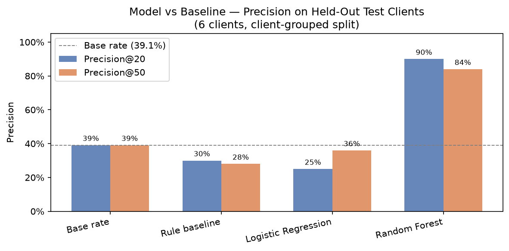
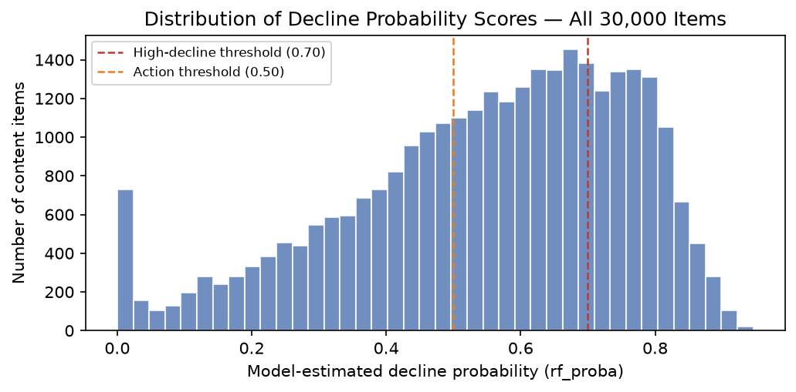
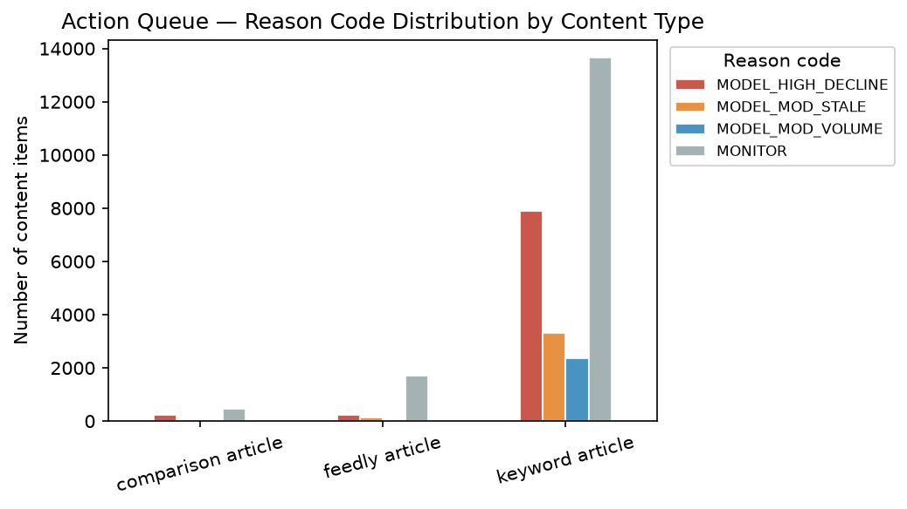

FlyRank ML Internship · Capstone · August 2026
Can Search Signals Predict Content Decline Before Traffic Drops?
Abstract
Content teams managing large portfolios need to know which pages to refresh first — before traffic has visibly dropped. This study asks: can a snapshot of search and engagement signals predict which content items are currently in decline? Using a 30,000-item cross-sectional dataset from 32 pseudonymized client portfolios, a Random Forest classifier was trained to rank items by their estimated decline probability using 29 features spanning search volume, engagement, freshness, and position. On six held-out clients never seen during training, the model achieved 84% Precision@50 — meaning 42 of every 50 top-flagged items carried the observed decline label — compared to a 39% base rate and a 28% rule-based baseline. The output is a ranked decision-support queue for human review, not an automated system: it surfaces which pages deserve attention first, while a human reviewer confirms each recommendation before acting.
Introduction
A content team managing 30,000 pages cannot review them all each week. The typical fallback is a spreadsheet rule: flag anything older than 90 days with high search volume. That rule is transparent and cheap to run — but does it work?
In this dataset, the rule-based baseline achieves only 28% Precision@50 on held-out clients, below the 39% base rate. This means the rule is a worse-than-random guide on unseen clients: it flags pages that are less likely to be declining than a random draw would be.
The research question is direct: can a machine learning model trained on search and engagement signals rank declining content items meaningfully better than the rule? The answer this work reports: on six held-out clients, yes — from 28% to 84% Precision@50, a 3× improvement over the rule and a 2.1× improvement over chance. The result is framed as decision-support: a ranked queue a human editor uses to prioritise their review week, not an autonomous content management system.
Data
The dataset is the FlyRank ML Internship starter dataset
(content_refresh_anonymized.csv) — a 30,000-row cross-sectional snapshot of
content items across 32 pseudonymized client portfolios, with trailing-90-day metrics
captured at a single point in time. All identifiers are pseudonymized; no client names,
URLs, or raw search queries appear in this work.
Key statistics
Label definition
is_declining_label = 1 when trend_direction == "down".
trend_direction is derived from trend_pct — the ratio of
impressions in the last 30 days versus the prior 30 days. This is an observational label
within the same 90-day snapshot; it does not represent a prospective measurement.
What was excluded and why
- trend_direction, trend_pct — excluded as features because they are the direct source of the label (leakage).
- impressions_last_30d, clicks_last_30d, sessions_last_30d — excluded because they overlap the label's measurement window (future leakage).
- content_id, client_id — excluded as identifier columns, not signals.
- avg_position = 0 — recoded to NaN then filled with the column median; zero means "no data" in this dataset, not rank zero.
Gotchas honoured
Rate columns (ctr, engagement_rate, scroll_rate,
ai_traffic_pct, trend_pct) are stored as ×100 percentages
(0.76 means 0.76%, not 76%). Missingness follows content_type: feedly articles
have ~100% missing keyword fields; keyword articles have ~28% missing word_count.
Instead of a blind fillna(0), binary has_clicks and
has_ai_sessions flags preserve the distinction between "zero" and "missing".
Methodology
Features (29 total)
21 numeric features and 8 label-encoded categorical features. The numeric set includes
log-transformed traffic columns (log_impressions_90d, log_clicks_90d,
log_sessions_90d, log_ai_sessions_90d), engagement signals
(ctr, scroll_rate, engagement_rate), position and
freshness (avg_position, days_since_last_update,
content_age_days), and binary flags (has_clicks,
has_ai_sessions, measurable_opportunity). Categoricals include
content_type, main_intent, age_tier,
freshness_tier, impression_tier, and position_tier.
Models compared
- Rule baseline (w04) — staleness ≥ Q75 (104 days) scores +2; search volume ≥ Q75 (20) scores +1. Transparent but unvalidated.
- Logistic Regression — standard-scaled features, C=1.0, 1000 iterations. Interpretable first step.
- Random Forest — 200 trees, max depth 12, min samples per leaf 10, seed 42. Main model.
Validation design — client-grouped split
The 32 clients were shuffled (seed 42) and split 80/20: 26 clients for training, 6 clients as a held-out test set. Row-level random splits were explicitly rejected because they allow the model to see rows from the same client in both train and test, inflating scores by memorising client-level patterns. The honest effect: Precision@50 drops from 94% (random split) to 84% (grouped split) — a 10-point gap that represents the true cost of the naive approach.
Leakage audit (7-point checklist)
- No forbidden columns in the feature matrix (confirmed by set intersection check).
- No label-derived or sibling columns (trend_pct, trend_direction excluded).
- No future-window columns (last-30d sub-aggregates excluded).
- No product flags or existing system scores as features.
- Split grouped by repeating entity (client_id).
- Base rate printed next to every metric.
- Permutation importance sanity-checked — top 3 features are days_with_impressions, log_impressions_90d, ctr. None are forbidden.
Injection test (w06): adding trend_pct as a deliberate leak raised
Precision@50 from 84% to 100% and ROC-AUC from 0.760 to 1.000 — confirming the
evaluation harness would catch real leakage.
Primary metric
Precision@K — of the top K items ranked by model score, what fraction carry the decline label? This matches the real use case: a content editor reviews the top 20 or 50 flagged items each week. ROC-AUC and accuracy are reported as secondary checks.
Results
All metrics are computed on the same six held-out test clients. Base rate on those clients was 39.1% — meaning a random guess would flag a declining item 39% of the time.
| Model | Precision@20 | Precision@50 | ROC-AUC | vs base rate |
|---|---|---|---|---|
| Base rate (random) | 39.1% | 39.1% | — | 1.0× |
| Rule baseline (w04) | 30.0% | 28.0% | — | 0.7× (worse) |
| Logistic Regression | 25.0% | 36.0% | 0.706 | 0.9× |
| Random Forest ✓ | 90.0% | 84.0% | 0.760 | 2.1× |

Top features (permutation importance on test set)
| Rank | Feature | Importance (mean ΔAUCroc) |
|---|---|---|
| 1 | days_with_impressions | 0.115 |
| 2 | log_impressions_90d | 0.034 |
| 3 | ctr | 0.017 |
| 4 | position_tier_enc | 0.010 |
| 5 | measurable_opportunity | 0.008 |
The strongest signal is days_with_impressions — how many of the 90 days
a page received any impressions at all. Items with consistently spotty impression history
are most associated with the decline label. This is observational: the pattern does not prove
that impression consistency causes decline; it is a co-occurrence in this snapshot.


Error analysis
Of 2,325 test rows, 827 (35.6%) were misclassified at the 0.5 threshold. Error rate differs by content type: feedly articles 26.9%, keyword articles 41.6%. Feedly articles have all keyword features zero-filled (search_volume, competition, cpc), giving the model fewer discriminating signals — their scores lean on the label base rate. Boundary-zone items (predicted probability 0.40–0.60) account for 636 test rows (27.4%); human review is essential in this range.
Limitations & Honest Framing
The following limits are stated before a reader finds them — this is standard practice in honest reporting, not a disclaimer added to soften a weak result.
- Cross-sectional snapshot only The dataset is one 90-day cross-section per content item. The model captures co-occurrence patterns in this period. Trajectory, seasonality, and longer-term trend dynamics are not modelled. "Declining now" and "recovering after a dip" can look identical.
-
Observational label — no causal claim
is_declining_labelis derived from the impression trend within the same snapshot used to build features. We observed that certain signal patterns co-occur with decline; we did not run an intervention study. "Refreshing content X will reverse its decline" is not a claim this work supports. - Six held-out clients = high variance 84% Precision@50 was measured on one draw of six clients from 32. A different draw could yield a different number. The estimate is directionally strong but should not be read as a guaranteed floor for all future clients.
- Feedly articles are underserved This content type has ~100% missing keyword data. The model's error rate on feedly articles (26.9%) reflects weaker signals, not a content-quality judgment. Flags for feedly articles warrant extra human scrutiny.
- No time-series component The snapshot does not model when a page started declining or how fast. A page declining steeply and one barely declining receive similar scores if their 90-day aggregates look alike.
- Boundary zone is genuinely ambiguous Items with rf_proba between 0.40 and 0.60 (27.4% of the test set) cannot be reliably classified. Treating them as confident flags would misstate the evidence.
Ranked Recommendations
The action playbook has four tiers. All tiers are decision-support — human review precedes any content change. The queue is not a content management system.
What must NOT be automated
- Content deletion — the model flags decline, not irrelevance.
- URL redirects or slug changes — SEO consequences outside the model's scope.
- Batch actioning at a single threshold — 84% Precision@50 means ~8 of every 50 "Refresh" flags are false positives; individual review catches them.
- Client communications from raw scores — the output is an internal prioritisation tool, not a client-ready report.
Value proposition (honest)
Without the model, a reviewer scanning 30,000 items at random would find a declining item 39% of the time (base rate). With the model's top-50 queue, the observed rate on held-out clients was 84% — a measured 2.1× improvement. This is the result on one draw of six clients; it is directionally strong and not guaranteed to generalise without revalidation on new data.
Retrain triggers
- Precision@50 on a fresh sample drops below 65%.
- Overall label rate shifts by more than ±10 percentage points.
- A new content type with >500 items is introduced (no learned signal for it).
- New 90-day snapshot available (~quarterly by nature of the data vintage).
Reproducibility
All notebooks are pinned to RANDOM_SEED = 42. Running each notebook
top-to-bottom in order reproduces the numbers in this paper exactly.
No private data is committed; the dataset loads from
data/raw/content_refresh_anonymized.csv which ships with the repo.
Acknowledgments & Data Credit
Built on the FlyRank ML Internship dataset — a pseudonymized, research-safe export of real production search and content analytics data. Data source and internship programme: flyrank.ai.
Crediting the data source is standard research practice. The dataset enabled work on real-world scale and signal complexity that a synthetic dataset would not have provided.